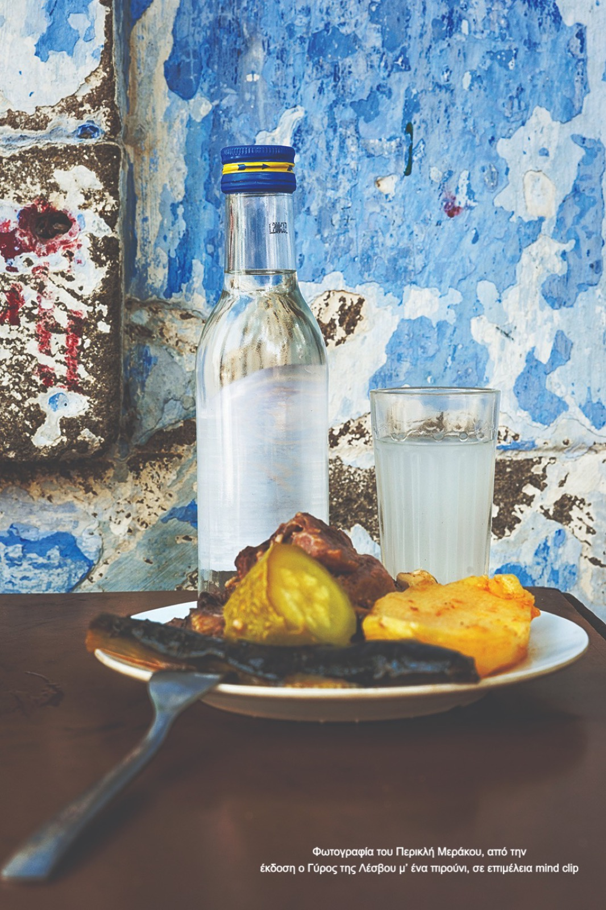
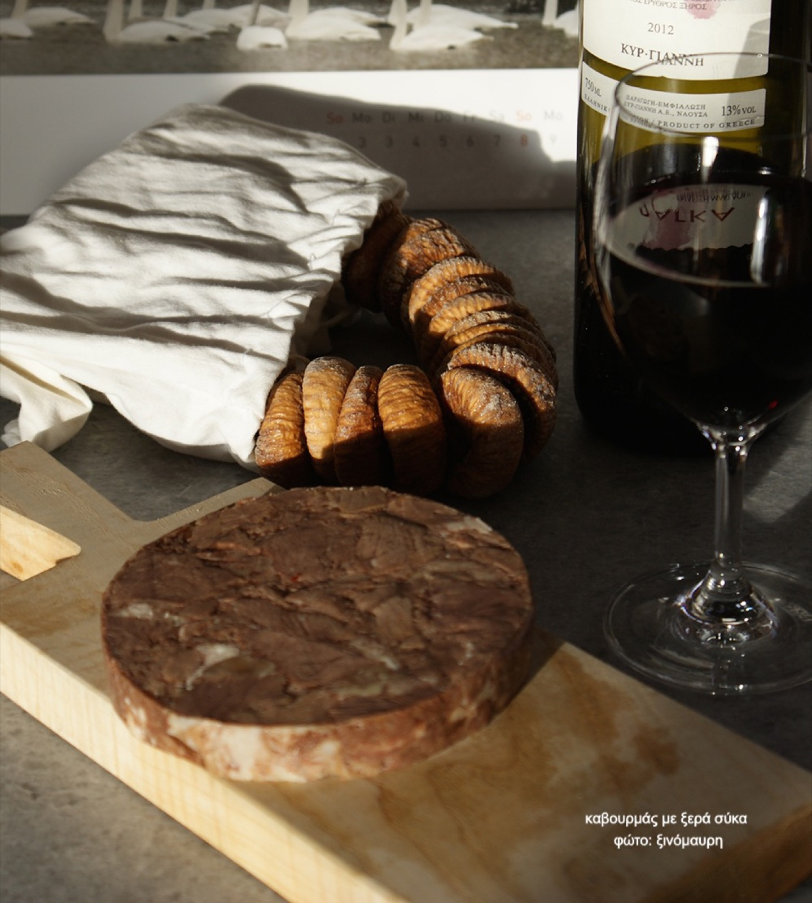

Τούρκικες λέξεις στο τραπέζι μας, 4ο μέρος

Λάμδα έως μπακαλ
Φτάσαμε αισίως και στο τέταρτο μέρος του άρθου για τις τούρκικες λέξεις στο τραπέζι μας (εδώ το πρώτο, δεύτερο, και τρίτο).

Για όσους δεν πιάσαν το νήμα από την αρχή, να σημειώσω ότι αφορμή γι' αυτή τη σειρά αναρτήσεων ήταν ένα άρθρο στο εξαιρετικό ιστολόγιο του Νίκου Σαραντάκου. Επίσης, θυμίζω ότι λέγοντας τούρκικες λέξεις, αναφέρομαι στις λέξεις που έφτασαν στην πόρτα και στα χείλη μας, λόγω της επαφής μας με τους Τούρκους, και δεν εξετάζω την απώτερη καταγωγή της κάθε λέξης, αν π.χ. είναι περσική, αραβική, αρμένικη κτλ.
Τέλος, μετά από παράκληση των αναγνωστών, σε κάθε λέξη παραθέτω μέσα σε παρένθεση, και την τουρκική. Ξεκινάμε λοιπόν με το λαπά.
λαπάς (lapa), φαγητό με ρύζι που βράζει έως ότου να χυλώσει. Μεταφορικά και ο μαλθακός, ο πλαδαρός άνθρωπος, ο νερόβραστος. Η λέξη είχε γίνει επίκαιρη στις αρχές της δεκαετίας του 90, (ή επί οικουμενικής;) όταν βορειοελλαδίτης πολιτικός αποκάλεσε λαπάδες τους ποιητές. Ο εν λόγω πολιτικός είχε διατελέσει και Υπουργός Πολιτισμού. Αν τα θυμόσαστε όλα αυτά, σημαίνει ότι έχετε καβαντζάρει τα πενηντα.
λεμόντουζου (limontozu), το κιτρικό οξύ, το οποίο χρησιμοποιούνταν στη μαγειρική ως υποκατάστατο του λεμονιού ή του ξιδιού.
λουκουμάς (lokma), διάσημοι αυτοί του ατμοσφαιρικού Κρίνου στην Αιόλου και της Στάνης στην Ομόνοια.
λουκούμι (lokum), το γλύκισμα εισήχθει από την Τουρκία και μαζί με τη γεύση ήρθε και η λέξη. Απλό αλλά ιδιαίτερα αγαπητό, παρασκευάζεται με άμυλο καλαμποκιού και ζάχαρη. Τα πιο διάσημα είναι αρωματισμένα με χιώτικη μαστίχα, τριαντάφυλλο, περγαμόντο και ινδική καρύδα. Αξιοσημείωτα, από γλωσσικής αποψης, το σουτζούκ λουκούμ της Κομοτηνής και ο Σερραϊκός ακανές, για τον οποίον ετυμολογικά δεν ξέρουμε με ασφάλεια πολλά πράγματα. Εκτός από το ίδιο το γλύκισμα, έφτασε να σημαίνει και το πολύ νόστιμο, "το κρέας έγινε λουκούμι", αλλά και την ιδανική κατάσταση, "μου ήρθε λουκούμι η αναβολή, λόγω κορονοϊου". Γευστικά, αν και τα λουκούμια της Σύρου κάνουν πολύ φασαρία, εγώ ξεχωρίζω τα μουστολούκουμα του Βόλου, τα Χιώτικα με χυμό πορτοκαλιού και των Γιαννιτσών, του Παπασταύρου στην πλατεία Μάγγου που μου τα έφερνε η μανούλα κάθε φορά που ερχόταν να με δει.
μαγιά (maya), κάθε υλικό που χρησιμοποιείται ως ένζυμο. Αυτό που προκαλεί ζύμωση. Έχουμε μαγιά για το αλεύρι, τη μπύρα, το γιαούρτι, το τυρί. Είναι ένα πολύ σημαντικό συστατικό για δεκάδες παρασκευές, που συνήθως μας προκαλεί ανασφάλεια και φόβο για το αποτέλεσμα. Σε γενικές γραμμές πρέπει να ξερουμε δυό πράγματα. Πρώτον ότι η φρεσκάδα της μαγιάς είναι πολύ σημαντική. Όσο πιο φρέσκια η μαγιά τόσο πιο δραστήρια, και άρα αποτελεσματικά, τα ένζυμα της. Και δεύτερον ότι όλες οι μαγιές δραστηριοποιούνται σε συγκεκριμένες θερμοκρασίες. Συνήθως +- 40 °C. Άρα το θέμα της θερμοκρασίας είναι κεφαλαιώδες και γι' αυτό είναι απαραίτητο ένα θερμόμετρο κουζίνας, όταν καταπιανόμαστε με τέτοιες παρασκευές.
Εκτός κουζίνας, σημαίνει το πρώτο στοιχείο σε μια διαδικασία, "αποτέλεσαν τη μαγιά για την επανάσταση". Και σ' αυτήν την περίπτωση η φρεσκάδα – ηλικία και η θερμοκρασία – πάθος παίζουν καθοριστικό ρόλο, ειδικά για την έκβαση μιας επανάστασης.
Ένα παράγωγο της λέξης που άκουγα συχνά στα παιδικά μου χρόνια, και την χρησιμοποιούσε και ο πατέρας μου, μιλώντας για τις επιχειρηματικές του περιπέτειες, ήταν η λέξη σιρμαγιά ή σερμαγιά, η οποία σημαίνει το αρχικό κεφάλαιο για μία δουλειά, μια επιχείρηση.
μανάβης (manav), ο τούρκικος μανάβης, εκτόπισε σε πολύ μεγάλο βαθμό τον οπωροπωλη. Και μας έδωσε φρέσκα λαχανικά αλλά και τη μανάβισσα, τα μαναβικά ή τη μαναβική και το μανάβικο.
μαντέμι (maden), ο χυτοσίδηρος. Εδώ στα περί κουζίνας, μας ενδιαφέρει το πόσο καλύτερα μαγειρεύουμε σε μαντεμένιο τηγάνι ή μαντεμένια κατσαρόλα. Αν και αυτά τα σκεύη είναι βαριά και κάπως δύσχρηστα, το γευστικό αποτέλεσμα είναι κλάσεις ανώτερο. Επίσης έχει μετρηθεί και έχει βρεθεί ότι τα φαγητά, ειδικά τα όξινα, που μαγειρεύονται σε μαντεμένια σκεύη, εμπλουτίζονται από τα σκεύη με σημαντικές ποσότητες σιδήρου, απολύτως χρήσιμου στον οργανισμό μας.
μαντζούνι και ματζούνι (macun), γιατροσόφι, πρακτικό φάρμακο, φαρμακευτική ιδιοπαρασκευή. Συχνά χρησιμοποιείται για να δηλώσει το ρόφημα από βότανα και σπανιώτερα πλέον, ένα είδος ζαχαρωτού, κάτι μεταξύ καραμέλας και γλειφιτζουριού.

μεζές (meze), ορεκτικό. Βέβαια ο μεζές δεν είναι απλώς φαγητό, είναι ένα ολόκληρο γαστρονομικό σύμπαν. Είναι ιδέα και τελετουργία. Είναι η συνάντηση γύρω από ένα τραπέζι με μεζεδάκια ή μεζεκλίκια. Είναι η αίσθηση της αφθονίας από το ελάχιστο. Είναι το μοίρασμα, μια χορογραφία γεύσεων για παρέα, αλλά και για μοναχική περισυλλογή. Ο μεζές δεν είναι φαγητό για χόρταση, είναι διαδικασία προς τέρψη, τρόπος που εντείνει την απόλαυση του αλκοόλ. Έχουμε μεζέδες θαλασσινούς και στεριανούς, νηστίσιμους και αρτυμένους, μαγειρεμένους και ωμούς. Μεταξύ των κορυφαίων θαλασσινών, το χταποδάκι ξιδάτο, λιόκαφτα ή παστά ψαράκια, φούσκες και αχινοί με μια στάλα λεμόνι, λεπτοκομμένες φετούλες αυγοτάραχου. Στους στεριανούς, αξεπέραστος είναι ο καβουρμάς με ξερά σύκα, τα αυγά μάτια με στακοβούτυρο, δυο τρία κομμάτια παλαιωμένη γραβιέρα, μια μελιτζάνα τουρσί γεμιστή με λάχανο, καρότο και σκορδάκι, τυλιγμένη με το μίσχο του σέλινου, λίγες ελιές, μια ντομάτα τριαντάφυλλο, λίγα φρέσκα αμύγδαλα, φρεσκοκομμένα αντζούρια με ξιδάκι, δροσερό τζατζίκι και δεκάδες ακόμη.
Συνοδεία του μεζέ, πρώτο και καλύτερο το ούζο. Ακολουθεί από κοντά το τσίπουρο, ενώ όλο και περισσότερο κερδίζει έδαφος το κρασί, με τις ρετσίνες της νέας γενιάς να πρωτοστατούν.

μουσακάς (musakka), αν και έχει ανατολίτικες ρίζες, η σημερινή του μορφή στην Ελληνική κουζίνα οφείλεται στον Νίκο Τσελεμεντέ, ο οποίος πρόσθεσε τη μπεσαμέλ, σε μια προσπάθεια εξευρωπαϊσμού της ελληνικής κουζίνας. Και στη κορύφωση του εκσυγχρονισμού μας, το μακρυνό 1999, ο Πάνος Κούτρας γύρισε την ταινία "Η επίθεση του γιγαντιαίου μουσακά" και μας προϊδέασε για την εξέλιξη της δημοσιογραφίας και της κοινωνίας μας.
μπαγιάτικος (bayat), αν μιλάμε για τρόφιμα, αυτά που έχασαν την φρεσκάδα τους, αν μιλάμε για ανθρώπους, ο συντηρητικός, ο έχων παλιά μυαλα, ο εραστής του χθες. Για να επανέλθουμε στα τρόφιμα, αξίζει ειδική μνεία στο μπαγιάτικο ψωμί που έχει λαμπρή κατάληξη ως χρυσαφένια αυγόφετα, πασπαλισμένη με λίγη ζάχαρη.
μπακάλης (bakkal), μετά το μανάβη, ο τούρκικος μπακάλης εξοστράκισε τον παντοπώλη. Η λέξη μας έχει δώσει δεκάδες παράγωγα: μπακάλικο μπακάλισσα και μπακάλαινα, μπακαλόχαρτο, μπακαλίστικος, αυτός που κάνει πρόχειρους και όχι τόσο έντιμους λογαριασμούς. Υπάρχει και ως επίθετο το οποίο έφερε και ο Καρδιτσιώτης Μπάμπης Μπακάλης, στιχουργός και συνθέτης μεγάλων λαϊκών επιτυχιών. Και αφήνω τελευταίο το μπακαλόγατο για να θυμηθούμε τον πιο διάσημο.